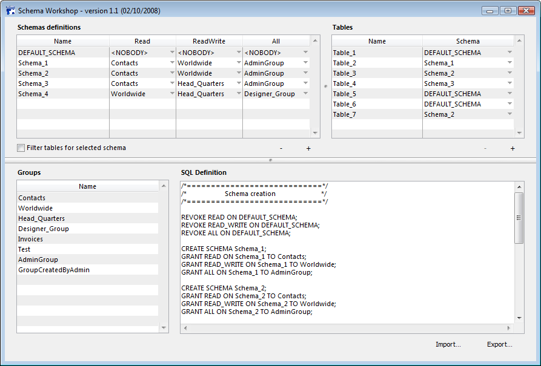
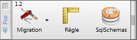

Installation
Place the folder "4DPop sqlSchema.4dbase" or an alias of the folder into the "Components" folder; near the structure file of your database.

To open the dialog, execute the method "SC_Dial_Workshop"
If you use the component "4DPop", the sqlSchema tool appears in the palette, just clic on it to open the dialog.

Use
The dialog allows you to create, drop or rename schemas. You can grant or revoke rights for specific 4D groups. Once a schema is defined you can apply it to any table. When the schemas are completely defined, you can save the SQL definition into a text file. It allows you to reimport them later.
The dialog
| Groups | |
 |
This is the place groups are defined. You can modify them using the command EDIT ACCESS.
Two virtual groups are also used for schemas : <EVERYBODY> and <NOBODY>. <EVERYBODY> means that no restriction applies. <NOBODY> means that no one can access the right level (REVOKE command). |
| Schemas | |
 |
This is the place were you create Schemas and define rights for 4D Groups. DEFAULT_SCHEMA can not be dropped or renamed.
READ means that the melbers of a group can access the data in Read-Only mode.
READ_WRITE means that users can access in Read-Write mode.
ALL means that users can access the structure definition (Alter table, Create field, create indexs,...).
|
| Tables | |
|
This is the place were you apply schemas to the tables of your database.
All the tables that has no specified schema belongs to the built-in DEFAULT_SCHEMA.
|
Preview| |
|
 |
In the text area you can preview the SQL statement that reflects the Schema definition.
|
Code Library
Generics functions are provided with the component.
| SC_Dial_Workshop : | Opens the Schema definition dialog. |
| SC_Get_Tables_from_SchemaID : | Fills a text array with tables belonging to a specified Schema ID. |
| SC_Get_Tables_from_SchemaName : | Fills a text array with tables belonging to a specified Schema Name. |
| SC_GroupExists : | Returns True if the specified group exists (including virtual groups). |
| SC_K_Default : | Returns the name of the default schema. |
| SC_K_Everybody : | Returns the name of the <EVERYBODY> virtual group. |
| SC_K_Nobody : | Returns the name of the <NOBODY> virtual group. |
| SC_Schema_Create : | Creates a schema and optionnally sets the groups for the rights. |
| SC_Schema_Drop : | Drop a specified schema. |
| SC_Schema_Exists : | Returns true if a specified schema exists. |
| SC_Schema_Get_ID : | Returns the schema ID based on its name. |
| SC_Schema_Rename : | Rename a specified schema *. |
| SC_Schema_Right_Grant : | Grants right to a specified group for a specified Schema. |
| SC_Schema_Right_Revoke : | Revoke right for a specified Schema. |
| SC_Schema_Rights_Grant : | Grants rights for a specified Schema. |
| SC_Schemas_Load : | Loads the schema table in referenced arrays. |
| SC_Schemas_Supported : | Returns True if 4D version supports Schemas. |
| SC_Table_Exists : | Returns True if specified table exists. |
| SC_Table_Get_Schema : | Returns Schema name for specified Table. |
| SC_Table_Get_Schema_ID : | Returns Schema ID for specified Table. |
| SC_Table_Set_Schema_ID : | Sets the schema for specified Table. |
| SC_Tables_Load : | Load the tables in referenced arrays. |
* Not yet implemented
Source code provided
This component is given in compiled version, but you will find the source code in the folder "Sources" inside the component folder.